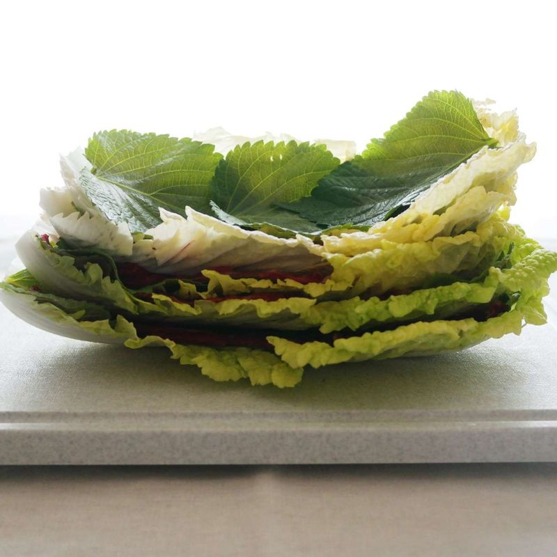
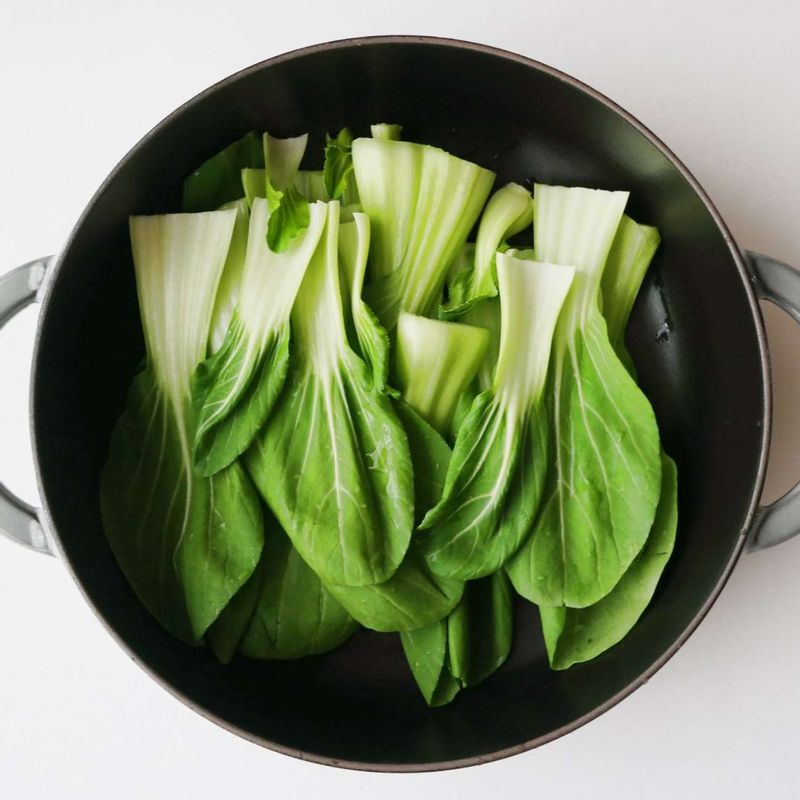
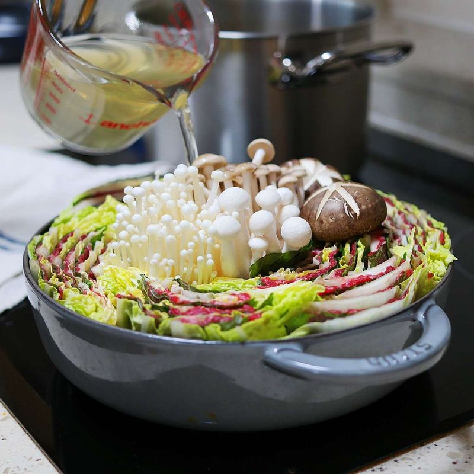

-

냄비에 육수재료를 모두 넣고 10분간 끓이다 다시마를 건져낸 후 10분가량 더 끓여서 육수를 만들어 주시고 간장을 조금 넣어 간을 맞춰 주세요.
배추, 깻잎, 고기, 배추 순으로 차곡차곡 쌓으신 후 전골 냄비 높이에 맞춰서 잘라주세요.
-

전골 냄비에 청경채를 깔아주신 후 잘라 놓은 배추와 고기를 겹겹이 담아주세요.
-

마지막으로 버섯를 넣고 육수를 냄비의 2/3정도가 올라오도록 넣은 후 배추와 고기가 익을 때까지 끓여주세요.
-
폰즈소스에 고기와 채소를 찍어서 드세요. 취향에 따라 시판용 스윗트 칠리소스와 함께 드셔도 좋아요. 남은 국물에는 국수를 넣어 삶아 드시거나 죽을 만들어서 드시면 좋아요.